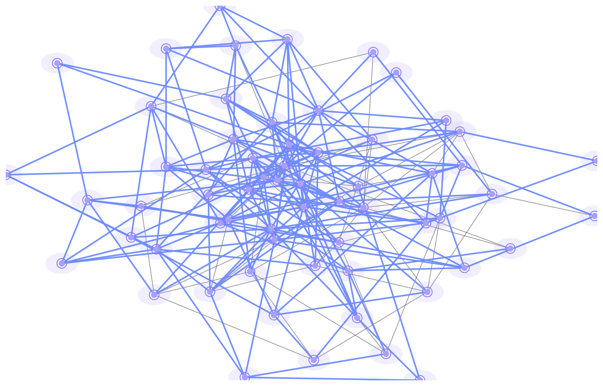
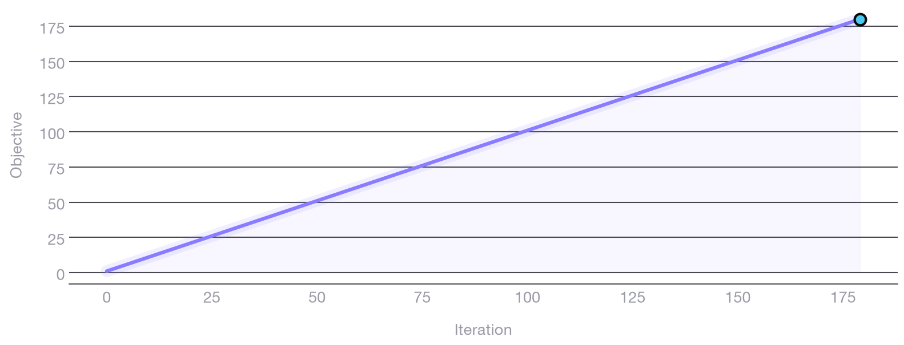

One framework, many problems
Maximum Planar Subgraph, Connected Dominating Set, Independent Set, Prize Collecting Vertex Cover, Facility Location, Steiner Tree — monotone and non-monotone alike. Same interface, six realizations.
General purposeDeltaSearch is a general heuristic framework for subgraph extraction. Every candidate move is scored with an O(1) incremental delta over a Reward–Penalty objective — no full re-scans, no configuration, no drama.
Subgraph extraction is everywhere — network design, facility placement, coverage, routing. DeltaSearch factors the hard part into one optional framework: a small, typed, dependency-free interface you apply to your own problem in minutes.
Maximum Planar Subgraph, Connected Dominating Set, Independent Set, Prize Collecting Vertex Cover, Facility Location, Steiner Tree — monotone and non-monotone alike. Same interface, six realizations.
General purposeEvery candidate mutation is scored with an O(1) incremental delta — no re-evaluation of the whole graph. An undo stack makes every step reversible, so backtracking costs nothing extra.
O(1) deltas · undo-stack
Fully typed (mypy --strict), thread-safe graphs, 320+ tests,
80%+ enforced coverage, CI green across five Python releases — and a
pure-standard-library runtime.
A tiny protocol, a greedy core, and pluggable solvers. Define your own problem in a handful of methods, or reach for a built-in one.
evaluate_initial_state builds a starting subgraph.
enumerate_actions lists candidate add/remove moves.
calculate_delta returns reward − penalty in O(1).
apply_action or undo_action, always reversible.
Stop on budget, stall, or objective target.
3V − 6 = 180 edges —
the optimal limit for a simple planar graph.

3V − 6 bound reached
·
GreedySolver · MaximumPlanarSubgraphProblem
Each problem is a fleshed-out SubgraphExtractionProblem —
instantiate it on a Graph, hand it to a solver, done.
Keep as many edges as possible while the subgraph stays planar.
The smallest connected vertex set that dominates the whole graph.
The heaviest set of mutually non-adjacent vertices.
Balance vertex cost against uncovered-edge penalties, collecting prizes.
Where to open facilities to serve demand at the lowest total cost.
Connect a set of terminals through optional nodes at minimum edge cost.
Each move is scored from local context via calculate_delta, not a full graph re-evaluation.
Every mutation is logged in an undo stack. Backtracking restores prior state without re-scoring.
ThreadSafeGraph wraps every read and write in an RLock for safe parallel search.
The observer protocol exposes every action, delta, and objective — logging, metrics, and tracing for free.

The greedy core is the floor, not the ceiling. Every strategy shares the same problem interface, so you can upgrade the search without rewriting the problem.
MultiStartSolver
Many random starts; the best result wins.
BeamSearchSolver
Top-κ candidate states explored in parallel.
AnytimeSolver
Best-so-far progress under a time budget.
AdaptiveBeamSolver
Diversity-aware beam ordering for better coverage.
LearnedGuidanceSolver
Online ML steers action choice as it explores.
MultiObjectiveSolver
Pareto-optimal frontiers across competing objectives.
StreamingSolver
Keep solving as the graph mutates under you.
HybridPipeline
Two-stage retrieval + reasoning, end to end.
Define a problem, point a solver at it, and read the result. Optional observers, early-stopping, and NetworkX interop when you need them.
from delta_search import Graph, GreedySolver, PrizeCollectingVertexCoverProblem
# Build an input graph with O(1) adjacency lookups.
graph = Graph[int].from_edges(
[(1, 2), (2, 3), (3, 1), (3, 4),
(4, 5), (5, 2), (1, 5)]
)
# Solve: cover every edge, keep the prize, pay vertex cost.
problem = PrizeCollectingVertexCoverProblem(graph, default_penalty=2.0)
result = GreedySolver(problem).solve(max_iterations=200)
print(result.best_objective) # 95.0 — objective found
print(result.iteration) # steps taken to get there
# Solve a graph and write the solution to JSON.
$ delta-search solve --problem mps --graph input.json --output result.json
# Validate a graph before you solve it.
$ delta-search validate --graph input.json
# Available problems: mps, mcds, mwis, pcvc, uflp, mwst
docs/ directory.
Install: pip install delta-search
One pip install away from six NP-hard problems, constant-time moves, and a search you can actually watch converge.
pip install delta-search · Python 3.10+ · MIT